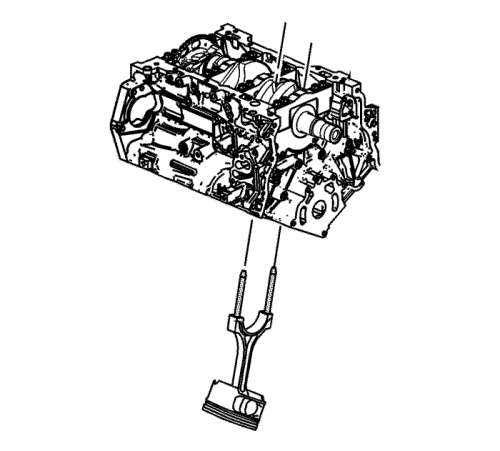

Nota:
| • | En la parte superior del pistón hay una flecha/punto que muestra la orientación adecuada del pistón. |
| • | Si los cojinetes de varilla de unión se han utilizado en un motor en funcionamiento, debe sustituirlos por NUEVOS cojinetes de varilla de unión para el nuevo montaje. |
- Antes de extraer las varillas de unión, compruebe el juego lateral de la varilla de unión con el siguiente procedimiento:
| 1.1. | Golpee la varilla de unión en un extremo del muñón del cigüeñal con un martillo de madera o golpe seco. |
| 1.2. | Con una galga de espesores, mida la holgura entre el contrapeso del cigüeñal y la varilla de unión. |
| 1.3. | El juego del lado de la varilla de unión no debería ser superior a los valores especificados. Consultar Especificaciones mecánicas del motor : LF1 . |
| 1.5. | Si la anchura de la varilla de unión es considerablemente menor que el valor especificado y existe un grave desgaste en el lado de la varilla de unión, sustituya la varilla de unión. |
| 1.6. | Si la anchura de la varilla de unión está dentro de los valores especificados y existe una formación de grietas excesiva en los muñones de cigüeñal, sustituya el cigüeñal. |
- Con un marcador, enumere cada lado del pistón. Dibuje una flecha alrededor de la línea central del pistón dirigida hacia la parte delantera del motor.
Atención: No use un punzón, un granete o cualquier otro método que pueda deformar o tensar la biela o tapa de la biela. Si una biela está deformada o tensada se pueden provocar graves daños en el motor.
- Marque el número de cilindro en la varilla de unión y la caperuza de varilla de unión con un rotulador, lápiz o marcador permanente.

Atención: Las varillas de unión de metal pulverizado tienen pernos de varilla que ceden al apretarse. Si los pernos de varilla se sueltan o extraen, deben sustituirse. Los pernos de varilla que no se sustituyan no apretarán a la carga de sujeción correcta y pueden ocasionar graves daños del motor.
- Quite los tornillos de biela.
Nota: Las caperuzas de varilla de unión deben permanecer con la varilla de unión original.
- Desmonte el sombrerete de biela.

- Monte el juego EN 46121 en los orificios de tornillos de la varilla de unión.

- Usando el juego EN 46121, inserte el conjunto de pistón y varilla de unión por la parte superior del cilindro. NO raye el apoyo del cigüeñal ni la pared del cilindro y NO dañe las boquillas de aceite cuando desmonte el conjunto de pistón y varilla de unión.

- Desmonte el juego EN 46121 de los orificios de tornillos de la varilla de unión.
- Extraiga el cojinete de varilla de unión superior de la varilla de unión.
- Extraiga el cojinete de varilla de unión inferior de la caperuza de varilla de unión.

- Vuelva a acoplar la caperuza de varilla de unión a la varilla de unión para evitar que se dañen las superficies de conexión. La caperuza y la varilla se corresponden entre sí y deben mantenerse juntas.